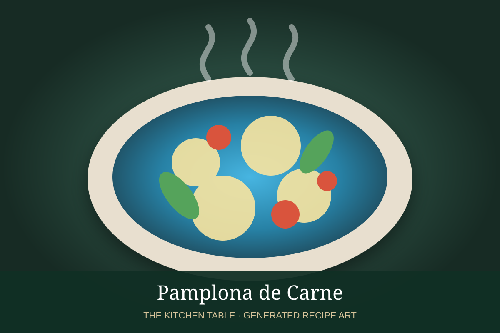

← Back to all recipes
MEAT · URUGUAYAN
Pamplona de Carne
Uruguayan stuffed beef rolls filled with ham, melting cheese, and roasted peppers, then grilled or roasted.
55 minServes 4

Photo: FoodMap
Ingredients
- 4 thin beef steaks, pounded to about 1/4 inch
- 4 slices cooked ham
- 4 oz mozzarella or provolone, cut into strips
- 1 roasted red pepper, cut into strips
- 2 tbsp chopped parsley
- 1 tbsp olive oil
- Kosher salt and black pepper
- Butcher’s twine or toothpicks
Preparation
- Lay the beef steaks flat and season lightly with salt and pepper.
- Place ham, cheese, roasted pepper, and parsley across the center of each steak.
- Roll each steak tightly around the filling and secure with butcher’s twine or toothpicks.
- Brush lightly with olive oil. Grill over medium-high heat, turning to brown all sides, until the beef is cooked and the cheese is melted, about 12 to 16 minutes total. Alternatively roast at 425°F until done.
- Rest 5 minutes, remove the ties or picks, and slice into thick rounds for serving.